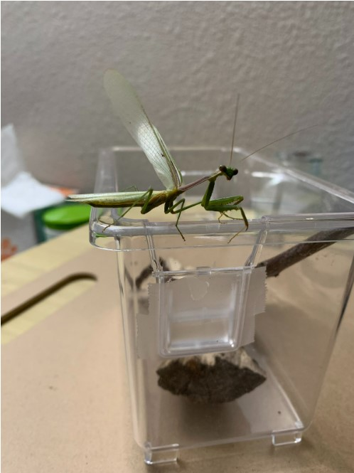

In Game Design UX Best Practices I learned the importance of reach radius based on the orientation of the device. I also learned how sliders can be useful along with alternatives to the “X” and “close” buttons. The article talked about how users would be more likely to interact with the buttons in the easy to reach radius of the screen and mentioned that this was how “dark-UX” is implemented in games in the form of advertisements and store/shop buttons. I do not have many games on my phone but the ones I do have, I opened to see if the “dark-UX” aspects were true and I found that on one app, the menu button was in the middle bottom and once opening that the shop button was right in the middle of the easy to reach radius. There were no ads on the screen though, at least not like they were described in the article. My other game requires me to hold my phone sideways and I noticed a lot of purchasing buttons on the edge of the right and left sides of the screen as well as pop ups for “deals” on packages for in-game money. Since mobile games have to fit inside a small window it is common to use horizontal and vertical sliders to display more items without making it look cramped. On my games I noticed vertical sliders used to display more information along with showing a log of items/characters. On my other game, there were horizontal sliders to show different levels and game categories as well as vertical sliders for “challenges” and daily rewards. The article also talked about trying to avoid the “X” and “close” button as users find it annoying after a while. In my games I noticed for the first one that there was one “X” button to close the menu but for all the others there was some form of centered bottom button to exit the windows/overlays. In my other game though, most windows/overlays had the “X” buttons on the top corner as well as another button to exit the window/overlay but I found myself more accustomed to closing them using the “X” button.
Journal 4
The image I chose to highlight is interesting because the mantis's wings are open and it is a male mantis so it is smaller and longer. Something others would not know from looking at this picture would be that I found this mantis in a swimming pool during the summer that I brought home and raised. Another thing that might not be known would be that it is not my first mantis and that he can fly because his body is lighter than the female counterpart. This image relates to the topic of my collection because it is one of the five mantids I’ve raised over the years and I plan to make my collection about each of them. My collection shows something maybe unique about me and how I have pet bugs that I feed other bugs to. Although they only live from Spring to Winter I still cherish the time I have with them and try my best to make sure I treat them well and try to extend their lifespan even if it is only a week more.

Fig.1 - Praying Mantis.
Ruofei’s image was about food or travel with a majority of it being Asian food in Asia. Some interesting aspects of this image were that the bowl of food was placed on a stool and others behind could be seen sitting on stools and eating from slightly taller stools. It seemed to be located eitheron the street or right by the street as I could see the back of a car or motorcycle tire in the background. It was also interesting that it was what looked like a bowl of noodle soup with an entire sausage in it. It is pretty obvious that it is in an Asian country and that it is some kind of noodle soup dish. It is mysterious what time of day this meal would be eaten and in what weather it would be preferrd to be eaten at as well as the climate seems dark but still daytime. Later Ruofei told me this is a common breakfast dish where she's from and that they just sit on stools and eat outside since there is no space inside most places for dining.
Fig.2 - Breakfast.
Journal 3
In 10 Intriguing Photographs to Teach Close Reading and Visual Thinking Skills, I was surprised to see photos that I recognized when I saw them floating around the internet over five years ago. Back then I didn’t care enough to really find out what the scenarios behind each photo was and just treated it as an obscure illustration that did not connect to real people or real life. I distinctly remember the man in the giant puddle with the police man which I assumed to be a sinkhole from unstable ground as well as the kid watching Casper the Friendly Ghost in what looks like the visiting area of a detention center.
An interactive website I thought of was a website made for the Kingdom of Bhutan which shows imagery that represents the country on the right hand side while the information on the left hand side can be scrolled through until the next section of information is reached. The scroll behavior varies throughout the website and when I first saw it I wondered if we would learn how to do something similar in our class. Not only did it intrigue me, it made me more interested and invested in the subject of the website.
Journal 2
In Best practices for Modals/Overlays/Dialog/Windows, I learned a few things to be aware of when using modals. First, I learned that the main reasons modals are used in web design are to catch the user’s attention, to get input needed from the user, or to show additional information that is not of immediate importance as a piece of content in the page itself. Second, I learned that all modals should contain or be made up of five different components. They should have a shadow over the main page as to bring focus to the modal while still having the main content visible. They should also have two ways for users to exit the modal: either using a close/exit button or a submit/enter button. They should also have a title to inform the users what the purpose of it is as well as be sized well in accordance with the screen size keeping in mind how it will look on mobile devices as it is advised to keep modals on the top half of the page to prevent it getting lost when viewed on mobile devices. Lastly, I learned that it is best to not have modals appear unless users have clicked a button or performed an action that prompts it. For example: when logging into or creating an account, that is an appropriate time to use modals but when entering a site, users should not be bombarded with pop up advertisements or modals asking to join their newsletter. If modals are overused, users will click out of them without even reading or caring what they are about as they become a nuisance over time.
Journal 1
In Best practices for form design, I learned a few important things to take into consideration when creating my own forms. First I learned that the spacing and distribution as well as the order of the form items is important. What I mean by this is that it is not good to put too many boxes on one portion of the form as it can look like a lot to users and deter them from wanting to fill it out. If there are any form items that are not immediately necessary it is good to have those as a “complete later” option and if there are a lot of form items that are necessary to complete the form it is good to have multiple pages and to show users how far along they are in completing the form. The order of the form is important as users are less likely to start a form if it is not convenient for them to get that information such as a credit card number or social security number but if they have already completed the previous steps and effort has been put into it they are more inclined to grab their information to complete the form since they’ve already made it so far. When spacing the form items it is better to have it in list form rather than have columns of items to fill out. This is another way users can be overwhelmed by a form which could cause them to not want to fill it out any longer.
An example of this I can think of is the sephora website. When browsing through the website users do not even need to fill anything out. It isn’t until users want to save an item or have items in their cart be remembered that they need to sign into their account which is just a simple email address and email. When checking out the process is simple and not overwhelming. Users can also “checkout as guest” if they do not want a full blown account. The first step is confirming basket items and adding any promo codes or selecting samples. Then users are asked for a shipping address, followed by a shipping option (standard shipping being the default), followed by if the order is a gift or not, and finally payment information. As mentioned in the article, the payment information is asked for at the end as users feel more invested in the process of completing the form as opposed to if they were asked for payment information at the very beginning. Finally, the user is asked to double check the basket and confirm their order.